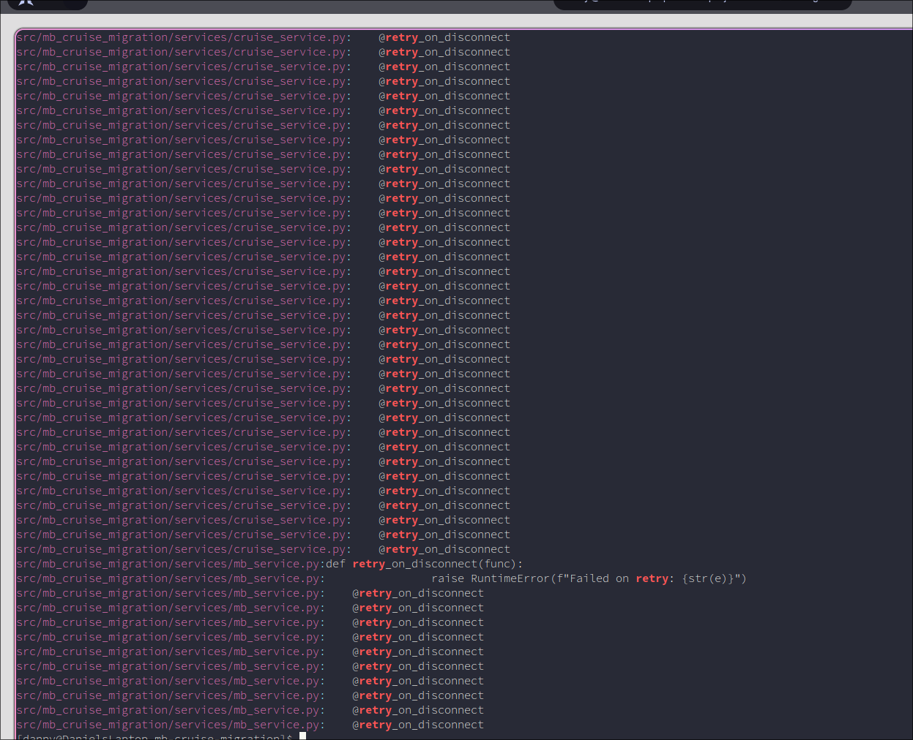

You Should Have a Blog
Introduction
See the details

Without a doubt one of the hardest things to do is to start something. Whether that's a new homework project, an awesome software idea, an interesting writing article, or even this very blog 1. I've personally found I have to be weary of getting stuck in a perpetual "ideation loop" where I continually think and think and think about the concept of starting and how I should start as opposed to actually acting on the concept.
> 44 44 44 44
Everything should be made as simple as possible, but not any simpler – Albert Einstein
In this deep rumination, brain storming possible first posts I realized that I'd keep asking myself the question, "Why?" After all, you might be thinking, "It's [Current Year Here] now didn't people leave blogs behind with dial-up and XMP?"/ Or, "You're a CS major, what possible reason could you have for blogging?" So on, and all the other questions suggesting blogging is some irrelevant or lost art.
So when I sat down to write "Why you should read my blog" I came to realize a lot of the reasons I listed were why everyone should have a blog. So I write you why you should have a blog (and in turn retroactively justify why I started one).
Being Creative is Extremely Attractive
Here's one fun reason you should have a blog! Studies have been able to show that "creativity" has actually been correlated with an increase in attractiveness (at least for men)2. And there's a variety of reasons3 for why that may be that will likely show up throughout the rest of this post.
- Creativity requires authenticity, a well appreciated trait in relationships
- Creativity demonstrates the agency through the process conceptualization, obviously you want someone who has some sense of operation
- Creativity is an intelligent task, there's a reason some of the enlightenment's greatest thinkers were also creatives
- Creative things are beautiful, beautiful things are beautiful lol
Naturally, a blog evidently would be one way to improve and demonstrate creativity since this should be an authentic, high agency tasks and hopefully improve my percieved attractivenss. Is what I would say if I was purely a narcissist, it'd be quite shameful to the human condition to only engage in something purely because it made you hotter.
"Being different" vs Being different.
(buzzlightyear shelf meme)
Related to being creative is the subject of taste. STUDYXYZ shows that the collective "taste" of people has gone down, and this can be explained by the concept of collaborative filtering.
Here's the general process of collaborative filtering: Say I had a crush on you and wanted to know more about you without talking to you directly (because I am very shy). To do that I'd probably go talk to your friends, see what they're saying about you, what interests they share with you, what they like and dislike about you. And I may weigh these different judgments based on how well connected the person I'm interrogating is to you. Hopefully, after interrogating enough people I should have a pretty good idea of what you are like and can begin plotting appropriately.
Much in the same way, an aspect of social media algorithms extrapolate what you like based on what your friends like and learns what they like from what you like. This can actually turn to be a good way to learn about someone but there's also a feedback loop that occurs with algorithms. You also develop a taste for what you like based on the content algorithms show you. So as you engage in social media, collaborative filtering exposes you to more of your friends algorithms and more of your algorithm to your friends, until eventually both you and your friends share a mainly cohesive taste in your algorithms. Literally, your taste is being informed by society so gaining taste from social media algorithms is actually impossible.
- Note about how most content you see is popular content since that's the stuff most people liked
Tech Literacy, a good reason but not necessary
There's enough AI doom in the world that I can get into here, but to be sussinct, it's critical to have some understanding of the tech used today to full understand what's happening in the modern world. Why do AI companies need so much water? Why are GPUs and RAM so important to AI? How are companies even able to distribute this expensive service at such as massive scale? What is my office suite doing when I open it up? What ways can and should tech evolve in the future? How should I interact with the world wide web in [current year here]? All of these should be questions you can answer.
On the flip side though, it's diffuclt to explain this to someone who hasn't invested the time to fully learn why exactly this is important. Much in the same way a caveman wouldn't be able to understand why calculus is so important until it fully learns what it describes and how it describes it. If you still aren't entirely sure why I'm saying you should start learning about servers, coding languages, and fediverse protocols (oh my!) I'd encourage you to attempt to peruse entry level content on the internet. You'd be suprised how much you may or may not know about even the very device you're reading on4!
Running a blog can be as technically easy or difficult you want it to be, from rolling your own hosting service and stack to simply writing to substack. My point here is that a blog is one fun and relevant way to understand the world wide web, websites, servers, coding, etc, etc.
An obligation or a privilege to share knowledge to share knowledge
Ever wonder why nothing seems significant?
(Insert it doesn't matter image) Does this resonate with you?
Consider that according to Wikipedia, one reason doomscrolling is problematic is because you're experiencing/reciveing massive quantities of information, and you know what the next action is? Swipe. It's utterly ridiculous. A though experiment, try recalling the last reel you watched? Can't? What about the last thing your learned? The difference here is that while doomscrolling, you aren't actually "learning" and the brain understands you don't care much for what you're watching as opposed to things you've intentionally had to process for whatever reason. The modern web provides so much access to information on an uprecedented scale that it'd be such as shame to not share any of it!
Blogs provide a convienent way to reflect and process what you're actually seeing.
-
Rory says a way to practice thinking about what you learn
- openai article, people are learning less because thinking is offloaded to chat
Exploring the Process of Research and Learning
How does one form an opinion? Thoughtful research I'd say. One of the reasons I wanted to start this blog was to drastically improve my ability to deeply understand, process, and distill knowledge as I received it since I found that was something high school very rarely asked me to do and something I've found I can err in. Careerwise, this would obviously be relevant to someone interested in working as a researcher in the future, distilling papers, and deriving new conclusions from what I know. Personally, blogs provide a unique motivation for looking a new things as opposed to hearing the same old tirades on social media algorithms.
AI and my chopped writing skills?
Do you need to write? AI proponents would say no. Surely not, I mean it's not like an important class divide throughout history was the ability to write vs not write. Yeah honestly, why did I even write this surely ChatGPT does better…
(Insert GPT generated text that's obviously ass)
It's obvious AI companies want to replace humanity, not supplement it. I could cope and say "but UBI!" but anything concerning the wellbeing of humans is obviously of no concern to MAMAA 5. Rising controversies with AI data centers, AI-enabled sexual abuse, AI-"art", Machine learning enabled social engineering, lackluster AI transparency, AI enabled privacy invasion, the lack of accountability with AI systems, and a plethora of other issues should make this more than obvious no matter how much Sam Altman claims, "AI won't replace humans. But humans who use AI will replace those who don't."
- Fun fact: Sam Altman once said this: https://youtu.be/YE5adUeTe_I
There is a distinct lack of humanity present with AI and it's proponents which becomes especially obvious when they attempt to engage in anything that requires a semblance of humanity.
— I never really understood the use of AI for writing, every generation I found to be a bit too bland, a bit too off, and a bit too compromised to use in any actual
- maybe not? Studies previously showing senior dev using AI weren't productive may be outdated due to larger context windows and improved coding abilities
Does it ever get better? Assuming we don't run out of resources does it ever get any better at all
Brands vs people: Why most social media feels so strangely impersonal compared to forums and blogs
I own an instagram account like many other people in my age group. And like many others in my age group using the web has become an experience of being exposed to infinite brand promotion. The funny content I watch features a brand making a tweet, the reels I'll scroll are interrupted by the 15th sigma male selling his course that will "definitely get you all the material desires you could ever want." Walking in a big city and advertisements line the skylines far as the eye can see.
A blog is different. A common practice for bloggers is to link to what types of media they're consuming, showcasing what they've curated over time. You'll also notice plent of bloggers don't .
- In the early days of the web, the primary method of monetizing activity on the web was a blog.
- Much like AI now, early web innovators were not concerned with the question of how to monetize the web. Webpages weren't dominated by advertisments taking you to websites with more viruses than a freshman dorm. Online social circles consisted of users with simi
Final reason (MOST IMPORTANT), negativity in (current year)
I'm guilty of doomscrolling as much as anyone reading this is. Even when it's not doomscrolling, I'll come home to my parents asking me my thoughts on the recent tragedy that they heard from the news that day. I'll check in on a friend's story and find out what new fad I have to be mad, sad, and/or glad about. A friend will send me a video and it'll remind me of all the flaws, all the insecurities, all the fears I carry with me. Even I'll complain about all the many people who have ever wronged me in my entire life, spewing vile hatred all the while.
My point-endless consumption defines modern life. When we try to connect with people, we ask "what movies have you watch," "what books have you read," "what music artists do you listen to." We post to our Instagram stories after reading the news story that upset us. Pundits and grifters spend every day telling us how we ought to spend our money on them for whatever moral rubric they think earns them the most money. We are always told what's wrong and when we ask how do we fix it the answer is to engage in more consumption. With our ability to consume some how growing stronger yet weaker at the same time we're left in a metaphorically catatonic state, having lost any sense of power or agency over our lives and our world.
-
Become a driver of public opinion, attention is a currency in the current economy
- cite how conversations on 4chan have influenced modern culture (chud origins, conspiracies such as pizza gae)
- Last sentence is weird, in reality our manifestation over our powerlessness over the world is tied to the democratic notion of our influence of society (via voting), our interdependedness due to division of labor, and our resultant mapping of "society" to the "world" and thus our lives
- so when we feel powerlessness against the world what we really mean is we are truly powerless in our lives, we lost our sense of free will
- optimal flow! (good flow) says micah
Parting Thoughts
But I don't like depressing endings so I'll prescribe you to do what the title says. But if a blog isn't your style that's fine. Make something else. One of the important ways we regain autonomy in our society is recognizing we don't always have to "take it". That we can produce. That you have a voice and that you have an idea of what you think. The world will never have enough makers because it's not about how many people are consuming. It's about the fact that we have access to so much knowledge we almost never use or talk about. That if we're going to listen and hear about so much happening that in equal outputs we need to voice and express how we feel about things in our world. The way dreams come to our world is through the tangibility of our creations, otherwise they just remain dreams.
Btw I don't mean produce perfectly. In fact, produce wrongly. Write the worst, draw the worst, make the worst thing imaginable. Because society would have you convinced that the only way to learn is to read and read until you're ready to write. But a lesson taught in a book is worse taught than the one taught by hard knocks. Knowledge unapplied is not knowledge at all, but rather useless information. A sculptor doesn't immediately create his statue. He first starts with rough carvings getting down the general shape. Then they refine to get some of the shading and depth down. And the sculptor keeps going refining more and more until it's good. You won't write the book you've always wanted to in one go. You'll jump around and make something incoherent. Then you'll go through drafts and drafts until you've created the dream you had. Really, the relevant part here is that you sat down and made something. Making something good can always come later. Society has always demonized being wrong but there's nothing wrong about it. Really, being wrong (evading the obvious debate/entire study of ethics) is an element of ignorance and poor teaching and not a failing of the person themselves. There's nothing wrong with you if you're wrong, but rather that you simply learned.
Footnotes
This took me over a year to write, My recorded start for writing this was at 2025-03-01T20:42:19-07:00
However, it has been show that women seen as less socially attractive may actual experience a reverse effect (creative unattractive women are seen as less attractive than typical unattractive women). One possible immediate explainer being misogyny :/
Evolutionary psychology might suggest creativity is an extended phenotype, geneticly coded behavior that influences their behavior amongst their environment and other organisms. Evolutionary psych is obviously not sufficient for explaining attraction though lol don't read this as anything related to sigma male garbage but as a curious note
Fun fact! Did you know, that when your device executes code it actually executes "ahead of time" conditions based on a probability on which code branch your environment will travel down? Even before you click on something your CPU may already be deciding if you will click on something! See speculative execution
MAMAA: Meta, Apple, Microsoft, Alphabet Inc, and Amazon.